Ser baterista realmente mudou minha vida. Não somente tocar bateria em si, mas todo o estilo de vida de músico: curtir sonzeira, ter banda, ensaiar, fazer shows, gravar fita demo. Quem já experimentou sabe como é bom viver essa rotina.
Essa página reúne minhas experiências e gostos na área musical. São textos longos e em sua maioria histórias. Relaxe, aproveite a viagem.
Os Melhores Álbuns de Todos os Tempos
| Bad Religion | Generator | 1991 |
| Bad Religion | Stranger Than Fiction | 1994 |
| Bad Religion | The Process of Belief | 2002 |
| Blink-182 | Dude Ranch | 1997 |
| Cólera | Deixe a Terra em Paz | 2004 |
| Dead Fish | Sonho Médio | 1998 |
| Dead Kennedys | Fresh Fruit for Rotting Vegetables | 1980 |
| Die Ärzte | 13 | 1998 |
| Face To Face | Big Choice | 1995 |
| Face To Face | Face To Face | 1996 |
| Garotos Podres | Canções Para Ninar | 1993 |
| Iron Maiden | Powerslave | 1984 |
| Lagwagon | Trashed | 1994 |
| Lagwagon | Hoss | 1995 |
| Los Mox | Tómen | 1999 |
| Metallica | Metallica | 1991 |
| Millencolin | Life on a Plate | 1995 |
| No Fun At All | No Straight Angles | 1995 |
| No Use For A Name | More Betterness | 1999 |
| Nofx | Ribbed | 1991 |
| Nofx | White Trash, Two Heebs and a Bean | 1992 |
| Nofx | Punk in Drublic | 1994 |
| Operation Ivy | Energy | 1990 |
| Os Cabeloduro | Com Todo Amor e Carinho | 1996 |
| Propagandhi | How to Clean Everything | 1993 |
| Ramones | Ramones | 1976 |
| Ramones | Adios Amigos | 1995 |
| Replicantes | Histórias de Sexo e Violência | 1987 |
| Screeching Weasel | My Brain Hurts | 1991 |
| Screeching Weasel | Bark Like A Dog | 1996 |
| Sepultura | Roots | 1996 |
| Slayer | Undisputed Attitude | 1996 |
| Sociedade Armada | Tocar e Protestar | 1999 |
| Strung Out | Suburban Teenage Wasteland Blues | 1996 |
| Ten Foot Pole | Unleashed | 1997 |
| Tequila Baby | Sangue, Ouro e Pólvora | 1999 |
| Toy Dolls | Dig That Groove Baby | 1983 |
| Toy Dolls | Bare Faced Cheek | 1987 |
As Melhores Bandas de Todos os Tempos
Gringos
- Apocaliptica
- Bad Religion
- Blink-182
- Dead Kennedys
- Descendents
- Die Ärzte
- D.R.I.
- Face To Face
- Iron Maiden
- Lagwagon
- Less Than Jake
- Linkin Park
- Los Mox
- Metallica
- Millencolin
- No Fun At All
- No Use For A Name
- Nofx
- Operation Ivy
- Pennywise
- Propagandhi
- Ramones
- Rancid
- Rufio
- Screeching Weasel
- Slayer
- Strung Out
- Suicidal Tendencies
- Suicide Machines
- System of a Down
- Ten Foot Pole
- The Used
- The Vandals
- Toy Dolls
- Voodoo Glow Skulls
- Wizo
- Yellowcard
Nacional
- A-OK
- Ação Direta
- Capital Inicial
- Carbona
- Cólera
- CPM 22
- Charlie Brown Jr.
- D.F.C.
- Dead Fish
- Garotos Podres
- Matanza
- Negative Control
- Noção de Nada
- Os Cabeloduro
- Os Catalépticos
- Pelebrói Não Sei
- Pinheads
- Raimundos
- Ratos de Porão
- Replicantes
- Sepultura
- Sociedade Armada
- Tequila Baby
- Ultraje a Rigor
Brega
- Aerosmith
- Avril Lavigne
- Bon Jovi
- Concrete Blonde
- Guns'n Roses
- Los Hermanos
- RPM
- Red Hot
- Roupa Nova
- Anos 80
Sonzeira do Mês
Tenho uma coluna em meu blog chamada "Sonzeira do Mês", que traz um artigo sobre música no último dia de cada mês. São reflexões sobre letras, bandas, shows e outros organismos do mundo musical.
Leia e deixe seu comentário!
- Dica de banda: Carbona (Abr 2006)
- Conheça a banda carioca Carbona, que com seu punk rock bubble gum ramonístico pode ser considerada o Screeching Weasel brasileiro.
- Coração Pirata (Ago 2006)
- Eu sei, você torce o nariz para o Roupa Nova. Mas leia essa letra com atenção.
- Fernandinho Viadinho (Set 2006)
- Na véspera das eleições, um comparativo entre duas músicas anti-Collor, a "Tô Feliz (Matei o Presidente)" do Gabriel o Pensador e a "Fernandinho Viadinho" dos Garotos Podres.
- Show do Toy Dolls em Curitiba (Out 2006)
- "Imagine todos estes seres de aparência agressiva cantando a musiquinha da elefantinha Nellie. E logo em seguida, desejando que a Glenda tivesse um bebê, seguido do gritinho "Uuuuíííí". [...] Eu estava lá. Eu cantei. Eu me arrepiei."
- Why Can't We Be Friends? (Nov 2006)
- "E é assim mesmo, nada de vinil riscado ou mp3 mal gravado. A música tem um final repetitivo e hipnótico, uma lavagem cerebral musical. [...] São 13 repetições consecutivas da estrofe que contém quatro repetições consecutivas da mesma frase. Faça as contas: 52."
- Box Car Racer (Jan 2007)
- "Box Car Racer é uma banda, é um álbum, é um projeto. Ou melhor, foi. [...] Como toda a genialidade do compositor foi concentrada e canalizada em um único projeto, o resultado é um álbum diferente, denso, experimental, inspirado. Não é blink, não é punk, não é hardcore, não é pop."
- Rápido! Rápido! (Fev 2007)
- Relembrando as academias dos anos 80: bermudinha de lycra azulona com listras brancas, camiseta regata amarela com estampa coloridona escrito HAWAII, meia grossa branca comprida tipo polaina, tênis branco e faixa vermelha felpuda na testa.
- Quem é o sujeito oculto? (Mar 2007)
- Trechos de uma letra traduzida e somente duas pistas. Será que você consegue descobrir do que se trata a letra e de qual banda ela é? Pratique suas habilidades de pesquisa musical!
- Ian MacKaye - Punk maduro e instigante (Abr 2007)
- "Ian MacKaye é a mente por trás das bandas Embrace, Minor Threat, Fugazi e The Evens. [...] Não é o punk típico 'destrua tudo' ou 'não há futuro' que você costuma ver por aí. [...] O Ian já é um senhor de 45 anos que ainda faz hardcore."
- Hino Nacional Brasileiro (Mai 2007)
- História, letra, partitura, curiosidades, interpretação, traduções, karaokê, MIDI, MP3, OGG, Exército, Ministério da Educação. Saiba mais sobre o nosso Hino!
- Rap e Metal, um casamento que deu certo (Jun 2007)
- "E pela primeira vez o mundo pop ouviu uma mistura viciante de guitarras com bateria eletrônica, scratches e o vocal descompassado do rap. Foi um sucesso imediato."
- Show do No Use For A Name (NUFAN) em Curitiba (Out 2007)
- "O No Use pode ser considerado como um dos 'pioneiros do Emo' no hardcore, pois eles sempre tiveram um som mais melódico e suas letras são emotivas. Mas diferente do 'chororô balançante' da nova geração, seu som é rápido e rasteiro, um tapa na orelha, como manda a boa e velha cartilha HC."
Se preferir, leia todos de uma vez.
Baterista Desde os 12
Comecei a tocar bateria com 12 anos de idade. Desde então passaram mais de 15 anos e toquei em 8 bandas. Aconselho qualquer um que tenha vontade, a experimentar o instrumento. Muito além de "fazer barulho", a bateria também é uma terapia. Mmmmm, bateria/terapia. Fora o "b" e "p" as outras letras das duas palavras são idênticas.
Escolher a bateria como instrumento tem várias vantagens:
- É gostoso (é bom de bater forte, com vontade)
- É um exercício completo (pernas, braços, peito, abdômen)
- É uma terapia anti-estresse (bater alivia as tensões acumuladas)
- Não precisa de eletricidade para funcionar, basta bater
- Manutenção rara, a única coisa que quebra sempre são as baquetas
- Não é preciso saber nada de notas musicais ou teoria musical
- Não é preciso ler partituras e tablaturas, basta saber contar
- É possível praticar sem o instrumento, batendo na mesa, na perna, no peito, no ar, ...
E algumas desvantagens:
- É um trambolho
- É caro
- Não tem botão de volume (quem mora em apartamento sofre)
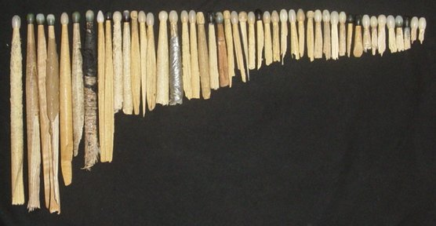 A "coleção" de baquetas quebradas (46)
Minha história com a bateria foi assim...
Tudo começou em Janeiro de 1990. Minha Mãe chegou para mim e minha irmã (12 e 10 anos) e deu a intimada:
"Vocês têm que fazer algo no tempo livre. Escolham um instrumento e vocês vão entrar numa escola de música."
Na hora achei um saco. Achei pior ainda quando fomos na tal escola ver as opções de instrumento: violão, flauta, piano, ... putz. Mas o último instrumento da lista me chamou a atenção: bateria. Poderia ser legal.
Na semana seguinte, eu e minha irmã estávamos fazendo aula de bateria. Ela já caiu fora no primeiro mês, mas eu gostei do negócio de tentar bater nos tambores em seqüência. E olha que foi gosto mesmo, porque o Sr. Professor só me enrolou. Me deixou durante uns 5 meses só tocando o pá-tu, pá-tutu e depois mais 4 meses só tocando valsa (tu-tá-tá, tu-tá-tá). Mas pra mim estava bom, eu não tinha bateria mesmo, então por mais tosca que fosse a aula, pelo menos eu estava tocando.
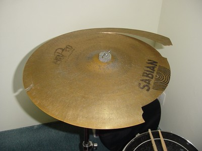 Os pratos também quebram se você for meio ogro
Mas para minha salvação e completa alegria, minha Mãe se convenceu que eu gostei mesmo do lance de bater e em Outubro me deu uma bateria de presente de aniversário! :D (Valeu mesmo Mãe!)
A bateria era uma Gope preta de lata com apenas uma afinação (sem pele na parte de baixo dos tambores). O som era horrível, sem peso e com pratos de lata, mas para mim era perfeita. Na mesma hora chutei a escola de música pois agora podia tocar o que quisesse.
Como nós morávamos em um apartamento, a bateria foi montada "de favor" na casa da Avó, que gentilmente dizia que o barulho não a incomodava (Valeu Vó!). E assim comecei a aprender a tocar de verdade: batendo, tentando, inventando, incomodando. Só podia tocar nos finais de semana, mas era 10.
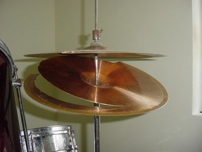 É, o chimbau também quebra se você for muito ogro
Passado um tempo conheci os mestres Ramones e como as músicas são extremamente fáceis de tocar, é um deleite para o iniciante. Você pode tocar igualzinho à música do disco! Era só deixar a fita tocando e tocar junto as músicas. Eles também me encaminharam para a direção correta, assim não perdi tempo tentando aprender a tocar samba, pagode, reagge ou outros ritmos palhas, foi punkrock na veia desde o comecinho.
Depois vieram os ensaios com as bandas que montava com os amigos e tocar bateria ganhou um sentido muito mais amplo. Agora também tinha que me preocupar em não alterar o ritmo (nem acelerar nem frear), volume das batidas, cantar junto e prestar atenção aos outros instrumentos.
Depois vieram os shows e agora era preciso levar partes da bateria (pratos, pedal, baquetas), ajustar a bateria do palco, aquecer bem, vencer o nervosismo, tocar sem parar por meia hora ou mais, depois desmontar tudo e voltar para casa cansado, suado e feliz.
Depois veio a gravação da fita demo da banda e tocar bateria de repente virou algo complicado. Na gravação qualquer errinho bobo aparece, como uma batida um pouco mais forte, fraca ou fora do tempo. Nos ensaios e nos shows isso não tinha a menor importância, mas agora a música tinha que sair perfeita do início ao fim. Pesado, mas gratificante de ouvir o resultado depois.
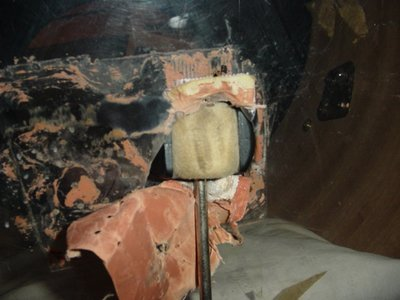 Ops, prometo não quebrar mais nada, ok?
Hoje tenho o prazer de poder ter a bateria montada em casa e tocar quando quero, e os ensaios da banda acontecem semanalmente (ou quase :).
Em algum lugar entre 95 e 96 minha Mãe novamente deu uma grande ajuda ao meu lado musical, me presenteando com uma bateria Mapex novinha, linda, perfeita (Valeu de novo Mãe!). Infelizmente algum tempo depois em 1996, a minha Avó morreu. Foram 6 anos agüentando a bateria em sua casa e com ela todos os ensaios das bandas que tive até então. E nunca reclamou. Vó, VALEU MESMO!
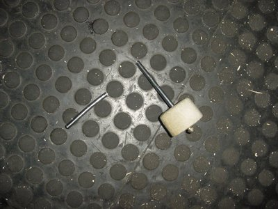 Er, bem... Vou continuar tentando...
Curiosidades:
- Tantos anos ensaiando, compondo e fazendo shows, e até hoje não sei absolutamente nada de notas musicais. Zero. A bateria segue o princípio sagrado do KISS (Keep It Simple, Stupid), deixando a música fluir de maneira natural e simples, sem teorizações e tecnicalismos.
- Quando fazíamos shows, eu levava meu "banquinho" de casa, que era um banco alto de madeira, tipo aqueles de boteco, em que você fica quase que em pé. Era bom de usá-lo porque eu podia bater mais forte (o curso de descida o braço é maior) e eu não ficava escondido atrás da bateria, podia ver o pessoal.
- Nos shows eu usava uma bateria minimalista, com apenas um prato e sem os ton-tons. Era chimbau, caixa, bumbo, prato, surdo. Só. É mais difícil de tocar porque o surdo não é tão acessível quanto os tons, e usar o mesmo prato para ataque e condução requer uns malabarismos. Mas compensa pelo impacto visual e por ser fácil de montar/desmontar a bateria. Ah, ter uma bateria mais simples também lhe força a tocar mais simples, podendo explorar mais o "punch" do que as firulas.
- Quando montamos o DUMBS, a primeira banda de hardcore que toquei, comecei a tocar com pedal duplo. Com ele os dois pés são usados para bater no bumbo (é como se tivessem dois bumbos) e é possível tocar ritmos mais rápidos e cheios. Nos últimos anos de ensaio com o VALETA e o NO SNACKS, voltei para o pedal simples e gostei. É muito mais macho tocar com apenas um pedal, mas não dá para fazer batidas seguidas como com o pedal duplo (quer dizer, o cara do Nofx consegue, mas ele é um alien). Hoje estou na dúvida do que usar. Tenho que virar alien também.
- É engraçado perceber como "ouvir música" nunca mais foi a mesma coisa. Antes de aprender a tocar bateria, quando ouvia uma música no rádio eu só prestava atenção no vocal e cantava a letra. Agora a primeira coisa que se destaca ao ouvir uma música é a bateria, as viradas, imaginar como o cara toca aquele ritmo... E isso é assim até hoje! Depois vem o vocal, depois o baixo e por último as guitarras.
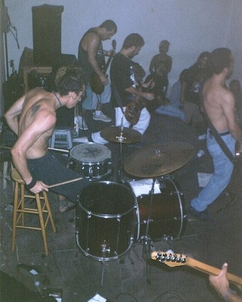 A mini-bateria (um prato, sem tons) e o banquinho de boteco
Baterna - Curso de bateria online e gratuito

Baterna é um curso de bateria pela Internet. É gratuito, 100% prático e não requer a compra de nenhum material. O aluno usa o próprio corpo como instrumento.
Destinado a leigos, não é preciso ter alguma habilidade especial. O ritmo é instintivo, está dentro de cada um. Você se surpreenderá ao ver que é muito fácil tocar, leva apenas alguns minutos.
Você já está pronto, sentado na frente do computador. Comece agora mesmo!
Bandas Que Já Toquei
Resumão:
- Cover (roque nacional)
- Cover (roque gringo)
- Cover (Ramones, 1994-1995)
- DUMBS (Hardcore melódico, 1996-2000)
- SCARECROW (Hardcore melódico, 1999-2000)
- VALETA (Hardcore tosco, 2001)
- NO SNACKS (Hardcore / New Metal, 2002)
- CORRERIA HC (Hardcore tosco, 2004-2006)
Depois que aprendi a tocar bateria, o passo seguinte é reunir os amigos e tentar montar uma banda. Bem, eu gostei tanto desse negócio que já toquei em várias delas. Aqui vai a histórinha das bandas.
A primeira vez tocando junto com alguém foi junto com um guitarrista, o Carlos Eduardo, colega do colégio, amigão de infância. Com uma bateria, uma guitarra e um som "três em um" servindo de amplificador, tentamos durante toda uma tarde tocar "Starway to Heaven". Ééééé, aquela.
Depois conheci uns caras e montamos uma banda cover (banda #1). Minha primeira banda! Tocávamos (tentávamos) Legião Urbana e outros roques nacionais. Muito legal a experiência, ter que aprender a tocar junto com outros instrumentos, tentar não sair do tempo, massa!
A bandinha acabou logo, nem lembro o porque. Depois eu e uns vizinhos montamos outra banda (#2) cover para tocar roque gringo, como Ramones, Alice in Chains e Nirvana. Também durou pouco.
Depois a primeira banda (#3) que foi mais duradoura, lembro que o primeiro ensaio foi no dia da morte do Airton Senna, dia 1º de Maio de 1994. Feita com uns amigos do CEFET, tirávamos várias músicas do Ramones. E era só Ramones, mais nada. Tínhamos um repertório de 33 músicas deles, era muito legal. A banda durou cerca de um ano, mas nunca fizemos nenhum show. Para mim foi uma experiência muito boa, foi onde aprendi a cantar tocando, se manter no ritmo, sacar o tempo das partes. Nada como aprender com os mestres do 1-2-3-4!
Mas a banda do coração ainda estava por vir. Em 1995 estava começando a aparecer em Curitiba shows de bandas que tocavam Hardcore. Hardcore, o que é isso? O Toxa (ou foi o Miguel?), amigo do CEFET que já conhecia alguma coisa me mostrou a luz. Fui devidamente sabatinado com o melhor da cartilha HC: Bad Religion - Generator e Nofx - Ribbed. Um tempo depois o Nissin também foi apresentado ao hardcore com estes mesmos álbuns.
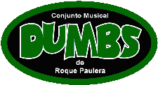
Noite do dia 26 de Agosto de 1995, no show do D.F.C. em Curitiba, resolvemos montar o DUMBS (banda #4) para tocar o tal do hardcore. A formação inicial foi eu, Toxa, Paulo, Bob e Nissin. Depois saíram o Toxa e o Bob, entrando o Fejão e o Mário em seus lugares, fechando a formação da banda. Foram várias aventuras juntos, todos ainda piazada, sem emprego, sem família pra sustentar, só estudando e se divertindo no auge dos 17, 18 anos. Ouça as músicas (mp3 download)
Gravamos uma fita demo em Dezembro de 1996 e nos anos seguintes fizemos vários shows em Curitiba e um (o único fora da cidade) em Camboriú-SC. Tocamos em colégios, chácaras, faculdade, festivais, botecos, festas de aniversário e até num shopping! A banda era muito unida, saíamos, viajávamos e íamos a shows sempre juntos. Mais detalhes na história completa da banda.
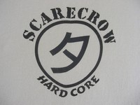
Ainda com o DUMBS na ativa, em Maio de 1999 fui chamado para entrar no SCARECROW (#5), outra banda de hardcore. Já conhecia os caras, já tínhamos feito shows juntos e tudo mais, então já entrei tocando. A banda teve uma trajetória conturbada, com muitas mudanças na formação. Mas apesar disso ensaiamos bastante e fizemos vários shows na cidade. Passado um tempo o DUMBS entrou em seu estado de hibernação, então praticamente fiquei só com esta banda.
Mais mudanças na formação e em Dezembro de 2000 o SCARECROW mudou de nome e virou VALETA (#6). Mudou também o estilo da banda, passamos a tocar um hardcore mais agressivo e gritado. As músicas eram tocadas numa velocidade absurda e todos da banda gritavam as letras. Era show de bola! Mas como quanto mais velhos os integrantes, mais difícil de manter a banda unida e empolgada, tudo acabou lá por Julho de 2001. Infelizmente não gravamos nenhuma fita demo, mas eu curtia muito as músicas. Ouça as músicas (mp3 download)
Em Dezembro de 2001, fui convidado para entrar em outra banda, o NO SNACKS (banda #7!), que tocava um hardcore mais puxado para o lado do metal Adidas (tipo Korn). Ensaios, shows, que bom estar tocando novamente! A festa durou até Maio de 2002, quando me mudei para Florianópolis e tive que largar a banda.
No final de 2003 voltei para Curitiba. Em 2004 voltamos a fazer ensaios com o NO SNACKS, incrível como eu ainda lembrava das músicas, que são bem complicadas e cheias de partes diferentes. Mas estávamos sem baixista, aí ficou complicado. O Nissin (DUMBS) assumiu o baixo em alguns ensaios.
Em 2004 voltei a ensaiar com os outros dois integrantes que sobraram do DUMBS (Fejão e Nissin). Começamos timidamente, mas empolgou logo e os ensaios ficaram freqüentes. O som estava diferente, mais agressivo, rápido e tosco. Então resolvemos aproveitar apenas algumas músicas "das antigas" e fazer um repertório novo. Para deixar mais clara a mudança, trocamos o nome da banda para CORRERIA (#8). Em 2006 tivemos que mudar o nome de novo, para CORRERIA HC, pois já existia uma banda com este nome. No mesmo ano foi decretada a morte da banda, pois já não conseguíamos mais arranjar tempo para ensaiar. Ouça as músicas (mp3 download)
Confira a coletânea de fotos de shows, que capta alguns dos momentos de diversão que já tive com essas as bandas. O show sempre foi nosso objetivo maior: reunir os amigos, tocar e agitar.
Shows de Punkrock e Hardcore
Desde os 17 anos de idade freqüento shows de punkrock e hardcore. Eles acontecem em lugares pequenos, bares desconhecidos da massa. Geralmente tocam apenas bandas locais, mas também vêm bandas de outros estados e até gringas. Tudo no esquema independente do faça-você-mesmo, sem apoio de gravadoras ou esquemas mais profissionais.
A divulgação dos shows é deficiente, antigamente apenas com cartazes xerocados colados em postes e murais de faculdades. Hoje tem a Internet e isso melhorou muito. Não vai muita gente, mas como os lugares são pequenos mesmo, geralmente lota.
Os caras das bandas são pessoas normais, que ficam junto com o público durante o show das outras bandas. Nada de camarim ou estrelismo. O público é o mais variado, com punks, metaleiros, surfistas e até mulheres.
Durante o show, o que importa é "pogar". O pogo é a "dança" punk onde as pessoas se chutam e se batem sem estarem brigando. Todos se divertem, voltando para casa com hematomas, porém felizes. Fiz um documento separado que descreve em detalhes o ambiente e a dança em si: "Roda de Pogo - A Dança Punk".
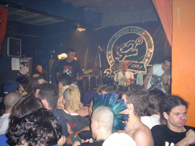 Pogo no show do Cólera
Já fui em shows grandes também que aconteceram em Curitiba. No AeroAnta (RIP) vieram Toy Dolls, Nofx, Bad Religion e D.R.I., na Fórvm veio o No Fun At All e na Pedreira o memorável show do Ramones. Outras bandas gringas que tive o prazer de ver aqui: Voodoo Glow Skulls, Shelter, GBH, Varukers e Lagwagon.
Um show grande de hardcore é igual a qualquer outro show grande: muitas pessoas amontoadas, fãs, forte esquema de segurança e geralmente alguma confusão. O palha é que não dá para pogar, pois tem muitos leigos que acham que pogar é dar porrada e estragam a roda.
O show do Toy Dolls no AeroAnta foi (e ainda é) o dia mais feliz que já vivi (24 de Junho de 1995). Essa foi a primeira banda punk que conheci, antes mesmo dos Ramones. Achar os discos (LP, vinilzão) deles era sempre um sofrimento e era muito raro conversar com alguém que já os conhecesse. Após anos de audição fiel, camisetas desenhadas, evangelização dos amigos, de repente ouço no rádio que eles iam tocar em Curitiba. Impossível de acreditar. Mas vieram. Só acreditei mesmo no final da primeira música. Foi mágico, surreal.
Diz a lenda que tem uma fita VHS com esse show gravado. Se você tem acesso a esse vídeo, POR FAVOR entre em contato.
E o show do Ramones na pedreira Paulo Leminski. O que foi aquilo? Ramones em Curitiba já era utópico o suficiente e no fim ainda veio Raimundos e Sepultura junto, e tudo isso por incríveis 10 reais! Inesquecível.
Eu escrevi resenhas sobre os shows que assisti entre 1998 e 2001. Ali tem shows de bandas locais de Curitiba e alguns de bandas de outros estados.
DDD - Distribuidora De Demos
Durante 3 anos entre 1997 e 2000 eu mantive uma distribuidora de fitas demo (k7) de bandas independentes que se chamava DDD. Era uma página na Internet que centralizava os dados das bandas e suas fitas demo, com um formulário de compra.

As bandas me mandavam uma fita demo "master" e vários encartes. Eu gravava as cópias em casa e colocava o encartes. Assim fazia o estoque. Os visitantes escolhiam as fitas, me mandavam o dinheiro via correio/banco e eu mandava de volta as fitas. Tudo bem simples, funcionava.
Foram 22 bandas que fizeram parte da distribuidora e um total de 350 fitas foram vendidas a R$ 3,00 cada (postagem incluída). Cansei de ir no correio :)
Acesse o MUSEU DDD, uma versão resumida do site da distribuidora, contendo todas as bandas e suas demos, além de informações sobre o seu funcionamento.
Continuando a série Forest Gump, segue a histórinha da DDD:
Contexto: O ano era 1997, Internet era uma novidade. Pouquíssimas bandas tinham site próprio e creio que não existia no Brasil nenhum site que se propunha a divulgar bandas independentes. Aliás, a Internet naquela época era bem "pobrezinha", não tinha quase nada de coisas nacionais...
Apenas dois meses após o lançamento do site da banda (DUMBS) e muito empolgado com esse negócio de fazer páginas e pessoas de todo o país poderem vê-las, fiquei com vontade de fazer outros sites. Mas um site do que? Para que?
Como eu tinha uma banda que gravou uma fita demo e precisávamos divulgá-la (CLICK!), veio a idéia. Resolvi montar uma "empresa virtual", uma distribuidora de fitas demo de bandas independentes. No dia 10 de Agosto de 1997 nascia a DDD.
Foi uma experiência sensacional. Eu mantinha uma página na Internet onde cada banda tinha uma área só sua (uma novidade na época!), com a capinha da fita demo, listagem das músicas, informações sobre a fita e sobre a banda, e 3 músicas inteiras para o internauta ouvir no formato Real Audio (mp3? O que era isso?).
Se a pessoa se interessasse pela banda, preenchia um formulário online e fazia o pedido. O pagamento (R$ 3,00 cada, postagem incluída) era feito via depósito bancário ou carta. Eu recebia o pedido por e-mail, gravava a fita e a enviava via correio.
Além da página da Internet e das vendas pelo correio, as fitinhas também eram vendidas nas lojas Rock House em Curitiba. As fitas eram vendidas por R$ 2,00 cada, a loja não cobrava comissão alguma, fazia por camaradagem. Valeu André e todo pessoal da Rock House! Nos shows punk/hardcore eu também levava as fitinhas, montando a "lujinha" da DDD.
Na minha opinião, a distribuidora era um sucesso. Eu me correspondia via e-mail e cartas com várias bandas e ouvintes do país inteiro, inclusive mandei fitas para o exterior também (Chile, Hong Kong), sempre tinha alguém pedindo fitas, bandas novas querendo participar, era show!
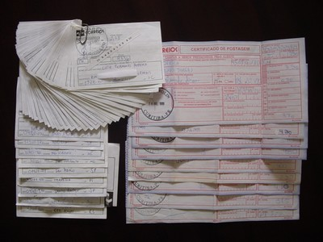 Correio? Que isso, quase nem fui...
Mas o crescimento da distribuidora foi justo o que a matou. Os dois problemas que enfrentei foram manter o site atualizado e arranjar tempo para gravar e enviar as fitas.
O site era composto por páginas estáticas geradas por um programinha simples em Shell (PHP? O que é isso?). Mas haviam processos manuais e a inclusão de uma banda nova dava bastante trabalho, fazendo a fila de entrada só crescer. Fiz um protótipo de uma versão dinâmica do site (com PHP e banco de dados) e planos de crescimento. Até consegui um domínio próprio e um provedor para hospedá-lo gratuitamente (muito obrigado amigos da SST!).
Mas não tive como continuar. A rotina de estudar e trabalhar não me deixou com tempo livre para tocar a distribuidora e menos ainda para melhorá-la. Não consegui tempo para implementar as novidades e já não conseguia nem mais gravar as fitas, dobrar encartes, estava tudo atrasado.
A gota d'água veio com a extinção do domínio onde estava a página da distribuidora, o brasmidia.com (valeu mesmo Luiz, por tudo!). Isso me fez refletir sobre tudo e decidi que ao invés de tentar empurrar nas coxas, o melhor seria largar de vez. Lembro com tristeza desse momento, ter que tomar esta decisão, mas gostaria de expressar meu AGRADECIMENTO SINCERO a todas as bandas que acreditaram na idéia e mandaram material:
22 bandas do catálogo da DDD:
- Ativistas (SP)
- Bulimia (DF)
- Dumbs (PR)
- Godzilla (SP)
- Imortal (DF)
- Impatrióticos (SP)
- Lava-jato (RJ)
- Lei do Cão (RJ)
- Los Mox! (Chile)
- Milhouse (RJ)
- Negative Control (SP)
- No Control (RS)
- No Name (RS)
- No Pain No Gain (SP)
- Noção de Nada (RJ)
- Scarecrow (PR)
- Schnaps (SC)
- Stn (PR)
- Stukas Lazy (PR)
- The Jerks (PR)
- Undertaker (RS)
- Wallride (RS)
16 bandas que mandaram material e não deu tempo de incluir na distribuição:
- Altered Mind (SP)
- Aversão (DF)
- Corroídos Pelo Sistema (SP)
- Detergente na Camada de Ozônio (DF)
- Folha de Palmito (SC)
- Fugitivos da Yakuza (SC)
- Hematocele Funesto (SP)
- Inércia (RJ)
- Long Way (RJ)
- Positive System (SP)
- Randal Grave (SP)
- Solium (RJ)
- S'punk the Monkey (PR)
- Unfashion (GO)
- Us Comipexe (BA)
- We Say No! (MG)
Outros
- Pérolas do punk
- Uma coletânea de frases legais encontradas em letras de bandas punk/hardcore.
- Banda Nerd
- Tenho muita vontade de montar uma banda com outros nerds para nerds ouvirem. As letras falariam apenas de nerdices, programação, dariam dicas, contariam histórias nerds. O ritmo seria um punkrock básico, ramonístico. Podia até aproveitar as músicas do Ramones e colocar letras nerds nelas. Bem, por enquanto fica só na vontade.
- Gêneros do Rock
- Um texto bacana que recebi por e-mail que explica a diferença entre os vários gêneros do metal e do rock de maneira didática: o cavaleiro que salva a princesa do dragão.
- LPs, CDs e Fitas k7
- Eu nunca fui muito de comprar LPs e CDs. Sempre emprestava dos amigos ou alugava (lembra quando haviam locadoras de CDs?) e gravava em fita cassete. Só se fosse muito, mas muito bom, eu comprava o CD. Em 10 anos de audição diária de música, comprei 6 LPs e 67 CDs originais. O último CD que comprei acho que foi em 2000, parei no tempo com a minha coleção atual. Já a coleção de fitas cassete é maior, passa de 250 unidades e ainda as escuto no carro e em casa.
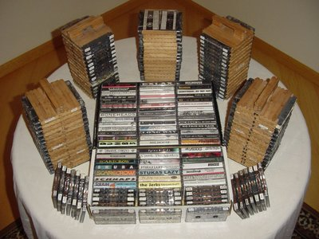 Minha querida coleção de fitas cassete